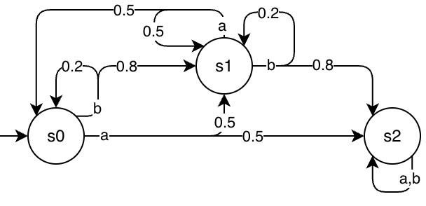

Vectorizing VeriGym environments¶
In this tutorial, we showcase how to create vectorized versions of VeriGym environments.
We cover the three main types of instantiable VeriGymEnvs: GenerativeEnv, AbstractExplicitEnv, and FrameworkExplicitEnv.
There are also three ways of vectorizing environments: using gymnasium-native functions, using the interface from stable_baselines3, and using VeriGym-native functions.
How can we vectorize different types of VeriGymEnvs?¶
The table below summarizes which combinations of API and VeriGymEnv work.
|
|
|
Notes |
|
|---|---|---|---|---|
|
(✅) |
✅ |
✅ |
|
|
(✅) |
(✅) |
(✅) |
For envs that include |
|
✅ |
✅ |
✅ |
|
|
(✅) |
(✅) |
(✅) |
For envs that include |
Why do we want to vectorize?¶
Vectorized environments allow for parallel training on several environments at the same time - this can drastically increase the data throughput and decrease the training time.
Why do we include custom VeriGym-native function?¶
The interfacing is often simpler with our custom types of VeriGymEnvs, which you can see in the later parts of this tutorial.
Imports, Helpers, and Data¶
import warnings
from verigym.environments.generativeenv import GenerativeEnv
from verigym.environments.explicitenv import AbstractExplicitEnv
from verigym.environments.frameworkexplicitenv import FrameworkExplicitEnv
from verigym.environments.transition_func import TransitionFunction
from verigym.environments.reward_func import RewardFunction
from verigym.frameworks.stormpy.stormpy_utils import load_stormpy_model
from verigym.frameworks.stormpy.formatter import StormpyFormatter
import gymnasium as gym
import numpy as np
from stable_baselines3.common.env_util import make_vec_env
import matplotlib.pyplot as plt
warnings.filterwarnings("ignore")
def print_vec_env_info(vec_env):
print("This is the: ", vec_env)
print("Observation space: ", vec_env.observation_space)
print("Action space: ", vec_env.action_space)
print("Number of envs: ", vec_env.num_envs)
print()
T = TransitionFunction.from_array(
np.array(
[[[0.0, 0.5, 0.5], # s0, a
[0.2, 0.8, 0.0]], # s0, b
[[0.5, 0.5, 0.0], # s1, a
[0.0, 0.2, 0.8]],# s1, b
[[0.0, 0.0, 1.0],
[0.0, 0.0, 1.0]]]
)
)
R = RewardFunction.from_array(
np.array(
[[1.0, 0.0],
[0.2, 1.0],
[0.0, 0.0]]
)
)
explicit_env_kwargs = {
"nr_states": 3,
"nr_actions": 2,
"initial_state_distr": np.array([1.0, 0.0, 0.0]),
"transition_function": T,
"reward_function": R
}
Vectorizing GenerativeEnvs based on gym.Env¶
We first initialize our stand-alone gym.Env using "FrozenLake-v1" as our example.
We also create a stand-alone GenerativeEnv for reference.
env = gym.make("FrozenLake-v1", is_slippery=False, render_mode="rgb_array")
gen_env = GenerativeEnv.from_gymnasium(env)
env.reset()
env_rgb = env.render()
gen_env.reset()
gen_env_rgb = gen_env.render()
fig, axs = plt.subplots(2)
axs[0].imshow(env_rgb)
axs[0].set_title(f"{type(env)}")
axs[1].imshow(gen_env_rgb)
axs[1].set_title(f"{type(gen_env)}")
for i in range(2):
axs[i].set_xticks([])
axs[i].set_yticks([])
plt.show()
For a standard gym environment, we have two options to vectorize (without initializing the env first): using gym.make_vec or make_vec_env from sb3.
# using gymnasium
gym_vec_env = gym.make_vec("FrozenLake-v1", is_slippery=False, render_mode="rgb_array",
num_envs=4)
# using stable-baselines3
sb3_vec_env = make_vec_env("FrozenLake-v1", n_envs=4, env_kwargs={"is_slippery": False, "render_mode": "rgb_array"})
Their representation differs slightly.
print_vec_env_info(gym_vec_env)
gym_vec_env.reset()
gym_vec_env_rgb = gym_vec_env.render()
print_vec_env_info(sb3_vec_env)
sb3_vec_env.reset()
sb3_vec_env_rgb = sb3_vec_env.render()
fig, axs = plt.subplots(nrows=2, ncols=2)
fig.suptitle(f"{type(gym_vec_env)}")
for i in range(4):
axs[i%2, int(i/2)].imshow(gym_vec_env_rgb[i])
axs[i%2, int(i/2)].set_xticks([])
axs[i%2, int(i/2)].set_yticks([])
plt.show()
plt.title(f"{type(sb3_vec_env)}")
plt.imshow(sb3_vec_env_rgb)
plt.xticks([])
plt.yticks([])
plt.show()
We have the same options available when using verigym.GenerativeEnvs that were built from_gymnasium.
The calls are slightly different, though:
For
gym.make_vec, we do not have anenv_idavailable for arbitraryGenerativeEnvs. Therefore, we call the function with the specs of the underlying env:env.spec.For
make_vec_caller, we also do not have theenv_idavailable. Therefore, we write a callback functionsb3_make_vec_caller, that creates a newGenerativeEnvobject for each of the vectorized environments.
Additionally, we can create vectorized environments using the VeriGym native GenerativeEnv.vec_from_gymnasium method.
gen_env_gym = gym.make_vec(gen_env.spec, num_envs=4)
def sb3_make_vec_caller():
env = gym.make("FrozenLake-v1", is_slippery=False, render_mode="rgb_array")
return GenerativeEnv.from_gymnasium(env)
gen_env_sb3 = make_vec_env(env_id=sb3_make_vec_caller,
n_envs=4)
vec_gen_env = GenerativeEnv.vec_from_gymnasium(env, num_envs=4)
print("Using gym.make:")
print_vec_env_info(gen_env_gym)
print("Using sb3 make_vec_env:")
print_vec_env_info(gen_env_sb3)
print("Using GenerativeEnv.vec_from_gymnasium:")
print_vec_env_info(vec_gen_env)
Vectorizing ExplicitEnvs¶
We first define a small explicit MDP with 3 states and 2 actions. You can find below also a visualization.

Then, we show how to easily create vectorized environments using all three methods.
exp_env_vec = AbstractExplicitEnv.make_vec(4, vectorization_mode="sync",
**explicit_env_kwargs)
exp_env_gym = gym.make_vec("AbstractExplicitEnv-v0", **explicit_env_kwargs, num_envs=4)
exp_env_sb3 = make_vec_env("AbstractExplicitEnv-v0", env_kwargs=explicit_env_kwargs | {"render_mode": None}, n_envs=4)
print("Using gym.make_vec:")
print_vec_env_info(exp_env_gym)
print("Using sb3 make_vec_env:")
print_vec_env_info(exp_env_sb3)
print("Using AbstractExplicitEnv.make_vec:")
print_vec_env_info(exp_env_vec)
Vectorizing FrameworkExplicitEnvs¶
FrameworkExplicitEnvs can be built from stormpy mdps. We are using a small test MDP for this example. test_2d is 2D grid-world, in which some fields are deemed “unsafe” and entering them leads to loosing. Reaching the bottom right corner leads to “success”.
We are parsing the MDP from a .prism file (specified in the PRISM modelling language), and then load the MDP using stormpy.
We first look at the MDP:
prism_file = "../tests/test_2d.prism"
mdp = load_stormpy_model(prism_file)
print(mdp)
Here again we have the three options for vectorizing this environment type:
fe_env_gym = gym.make_vec("FrameworkExplicitEnv-v0",
model=mdp,
formatter=StormpyFormatter(mdp),
num_envs=4)
fe_env_sb3 = make_vec_env(env_id="FrameworkExplicitEnv-v0",
env_kwargs={"model": mdp, "formatter": StormpyFormatter(mdp),
"render_mode": None},
n_envs=4)
fe_env_vec = FrameworkExplicitEnv.vec_from_stormpy(mdp, num_envs = 4, vectorization_mode="sync")
print("Using gym.make_vec:")
print_vec_env_info(fe_env_gym)
print("Using sb3 make_vec_env:")
print_vec_env_info(fe_env_sb3)
print("Using FrameworkExplicitEnv.vec_from_stormpy:")
print_vec_env_info(fe_env_vec)